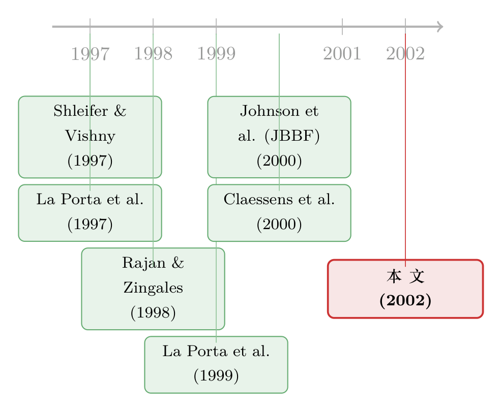

危机是一面照妖镜：当「好公司」和「坏公司」第一次被分开称重
本文读的是 Mitton (2002, Journal of Financial Economics)：在东亚五国 398 家公司里，危机期间股价跌得更轻的，恰恰是那些披露质量更高（有 ADR、用六大会计师事务所）、外部大股东更集中、且业务更专注的公司。结论很反直觉——在法律靠不住的地方，单个公司其实仍有办法替小股东多挡一点风险。
1 一个被「国别」框住的问题
1997 到 1998 年的东亚金融危机过去之后，学界很快达成了一个共识：弱公司治理 (weak corporate governance) 是这场危机的祸根之一。Stiglitz (1998)、Greenspan (1999) 都持这种看法。逻辑听上去也很顺：东亚那些公司，大股东掏空、关联交易、披露不透明，平时没人计较，危机一来就原形毕露。
可是这里有一个微妙的、却几乎被所有人忽略的缝隙。
支撑「治理引发危机」这一说法的核心证据，是 La Porta、Lopez-de-Silanes、Shleifer 和 Vishny（学界习惯简称 LLSV）的一系列研究，以及 Johnson、Boone、Breach 和 Friedman（下称 JBBF, 2000a）那篇直接打在危机上的文章。他们测的是什么？是国别的治理——一个国家的法律对投资者保护到不到位，会计准则严不严。JBBF 拿这种国别指标去解释各国货币贬值和股市跌幅，发现它比传统宏观变量还管用。
但「国别」这把尺子有一个天生的盲区：它只能告诉你印尼比马来西亚治理差，却没法告诉你，在同一个印尼内部，为什么 A 公司跌了 40%，B 公司跌了 80%。
于是一个自然的问题浮出来了：如果公司治理真的是危机里那只看不见的手，那它就不该只解释跨国的差异，它也应该能解释同一国之内、不同公司之间的差异。
这正是 Mitton 这篇论文的全部出发点。他要做的事，一句话就能说清：把治理这件事，从国别层面，硬生生拽到公司层面来看。
2 识别策略：让危机当那台「显影液」
要把治理拽到公司层面，第一步是绕开 LLSV 和 JBBF 用的那些国别变量——它们在一国之内是常数，根本动不了。Mitton 转而去找三个在公司之间真实变动的治理维度：
- 披露质量 (disclosure quality)：用两个虚拟变量来代理。其一，公司有没有在美国挂牌的 美国存托凭证 (American depository receipt, ADR)；其二，公司的审计师是不是六大国际会计师事务所（Big Six，当时 Price Waterhouse 与 Coopers & Lybrand 还没合并）之一。
- 所有权结构 (ownership structure)：最大股东的持股比例（按现金流权计），以及所有持股 5% 以上股东的合计持股。
- 公司多元化 (corporate diversification)：按两位数 SIC 行业算，一家公司是只做一摊生意，还是横跨多个行业。
接着，一个更关键的设计上的问题是：怎么保证你量到的是治理，而不是别的东西？
Mitton 的答案，藏在「危机」这个词本身。他反复强调一点——这场危机几乎是完全没被预期到的 (unexpected)。这恰恰是它在计量上的可贵之处。平时，一家公司的治理水平和它的股价是纠缠在一起的：治理好，估值就高，但你很难说清是治理推高了估值，还是高估值的公司「顺便」把治理也搞好了，内生性 (endogeneity) 像一团乱麻。而一场谁都没料到的危机，相当于在一个静止的横截面上突然泼下一盆显影液——它把那些「平时看不见、危机时才被投资者重新定价」的治理弱点，一次性冲洗了出来。
（关于「拿危机当显影液、把治理从内生性里洗出来」这套思路，后来在韩国数据上有一篇做得更精致的延续，可参见《危机是一台显影液：把「公司治理」从内生性里冲洗出来》。）
被解释变量是危机期间（1997 年 7 月至 1998 年 8 月）的个股累计股票收益，含股利、用本币并按本地物价指数调整。为什么不算用历史 beta 调整后的异常收益？因为很多公司的危机前数据不够长，算不出 beta。Mitton 索性退一步：直接用原始收益，再塞进一堆控制变量去吸收掉那些「本该影响预期收益」的因素——公司规模（总资产取对数）、杠杆（债务比率）、四个国别虚拟变量、十个行业虚拟变量。他还特地验证过：在能算出 beta 的那 80% 子样本里，一旦控制了规模、杠杆和行业，beta 对收益就再没有显著的解释力了。
把这套设定写成一条估计方程，大致是这样一个普通最小二乘回归：
$$ R_i = \alpha + \beta_1\, ADR_i + \beta_2\, BigSix_i + \beta_3\, Conc_i + \beta_4\, Div_i + \gamma' X_i + \varepsilon_i $$
其中 \(R_i\) 是危机期间的个股收益，\(X_i\) 收纳了规模、杠杆、国别与行业虚拟变量。整篇论文，几乎就是在反复审问 \(\beta_1\) 到 \(\beta_4\) 这四个系数的符号、大小与稳健性。
注意这里有个常被忽视的细节：把杠杆放进控制变量，其实是在跟自己作对。弱治理的公司危机前往往借得更多（Friedman and Johnson, 2000），所以杠杆这条线本身就吸走了一部分本属于「弱治理」的坏表现。换句话说，Mitton 是在故意调高检验难度——即便如此，治理变量依然显著。
3 数据：398 家公司是怎么筛出来的
样本国家是印尼、韩国、马来西亚、菲律宾、泰国这五个受灾最深的经济体。一家公司要进样本，得同时满足三个条件：在 Worldscope 数据库里有财务数据；主营业务不属于金融业（SIC 6000–6999);并且被 Worldscope 标记为进入了国际金融公司 (IFC) 的全球指数。
最后一个条件是关键的筛子。IFC 只收一国里规模最大、流动性最好的公司，这把样本从 Worldscope 里的 1,309 家，一路砍到通过 IFC 筛选的 571 家，再剔掉金融公司，剩下 398 家。Mitton 坦承这会牺牲样本量，但他有两个理由：一是 IFC 跟踪的公司数据质量更高（非 IFC 公司因缺失值被剔出回归的概率要高三到四倍）；二是有些治理决策（最典型的就是「要不要发 ADR」）对小公司根本不相关——成本太高，小公司压根不会考虑。
韩国贡献的公司最多（144 家），菲律宾最少（29 家）。所有权数据能匹配到的有 301 家（占 75.6%）。整个样本危机期间的平均收益是触目惊心的 −68.7%（中位数 −79.2%），这就是显影液泼下去之后，所有公司一起经历的那场暴跌的「平均脸」。
4 三个系数，三个故事
现在来看那四个被反复审问的系数。请记住，下面每一个数字，都是在控制了规模、杠杆、国别、行业之后得到的。
披露质量：透明，是危机里最值钱的东西。 有 ADR 的公司，危机期间收益高出 10.8%；审计师是六大之一的，在此之上再高出 8.1%。这两个加起来接近 20 个百分点——在一个平均跌掉近七成的市场里，这不是小数。它背后的故事很直白：ADR 也好、六大审计也好，本身不改变公司的现金流，但它们提高了信息的可验证性。当投资者开始恐慌、开始怀疑每一家公司是不是在偷偷掏空时，一家「账目摆得清清楚楚」的公司，就更难被怀疑，也更难被真的掏空。LLSV (1998) 早就论证过会计准则在治理中的核心地位，Mitton 把它从国别层面落到了公司层面。
顺带一提，「发 ADR / 跨境挂牌 = 主动租用一部更严的法律来约束自己」这套绑定假说 (bonding hypothesis)，是这条文献里极有生命力的一支。La Porta et al. (1999a) 就把发 ADR 当作「公司主动选入更保护小股东的法律体系」的范例。关于它，可参见《把股票挂到纽约，是为了给小股东一份「不会被偷」的承诺》与《租来的法律：把股票挂到纽约，真能管住自家的老板吗？》。
所有权集中度：大股东这把双刃剑，危机里砍向了哪一边？ Shleifer and Vishny (1997) 早就指出，所有权集中是与法律保护并列的两大治理决定因素之一。但大股东有两副面孔：他既有动力和能力去阻止别人掏空公司，自己也可能就是那个掏空者。La Porta et al. (1999a) 在投资者保护差的国家里发现了高度的所有权集中，并认为大股东与小股东的冲突才是这些国家最主要的治理问题。
那么危机这台显影液，照出的是哪一面？
Mitton 的回归给出了答案：最大股东持股每多 10%，危机期间收益平均高出 2.6%。也就是说，集中的外部大股东在危机里站在了小股东这一边——他们有足够的利益绑定去看住公司。这与 Lins (2000) 报告的「新兴市场大股东估值溢价」一脉相承，而危机把这个溢价放大了。
但真正精彩的一步在于 Mitton 没有就此打住。他把大股东拆开来看：那 2.6% 的溢价，几乎全部来自不参与管理的大股东。而那些「最大股东的投票权超过现金流权」的公司、以及金字塔结构 (pyramidal ownership) 的公司，收益反而更低——只不过，一旦控制了其他因素，这种负向显著性就消失了。这个拆解很重要：它说明「集中」本身不是护身符，集中在谁手里、以及现金流权和投票权之间有没有楔子，才是关键。
多元化：危机里，「多条腿走路」反而先崴了脚。 多元化严格说不算一种治理机制，但前人研究（Lins and Servaes, 2000; Lins, 2000）发现多元化公司透明度更低、信息不对称更严重，给掏空留了空间。Mitton 的结果：多元化公司危机期间收益平均低 7.6%。
于是反转出现了——这恰好和「多元化能改善资本配置」（Stein, 1997; Khanna and Palepu, 2000）的好处唱了反调。Mitton 的解释直指内部资本市场 (internal capital markets) 的阴暗面：危机里，多元化公司可能用稳健部门的资源去低效地输血给濒死的部门（Scharfstein and Stein, 2000; Rajan et al., 2000）。证据是：这 7.6% 的损失，几乎完全来自那些「各部门投资机会差异很大」的多元化公司——正是这类公司，最有动机和空间去做这种跨部门的低效输血。
（把多元化的「内部资本市场」拆开来做活体解剖，是一条很长的研究线，关于这一点可顺带一看《拆开来看，钱才流到对的地方——用「分拆」给内部资本市场做一次活体解剖》。）
5 文献脉络：从「国家」到「公司」的一次下沉
把这篇论文放回它所在的坐标系，脉络其实很清晰。
最上游，是 Shleifer and Vishny (1997) 那篇治理综述，立下了「法律保护」与「所有权集中」这两根支柱。紧接着，LLSV 用一连串跨国研究——Legal determinants of external finance (1997)、Law and finance (1998)、Corporate ownership around the world (1999a)——把「投资者保护」做成了一个可测量、可比较的国别变量，并证明它决定了一国金融市场的深度与公司估值。
然后，东亚危机来了。Rajan and Zingales (1998) 提出一个洞见：投资者在东亚景气时无视了这些公司的治理弱点，危机一来才恍然大悟、夺路而逃。JBBF (2000a) 把这个直觉做成了硬证据，但仍然停在国别：国别治理指标比宏观变量更能解释各国的贬值和股市跌幅。与此同时，Claessens, Djankov and Lang (2000) 把东亚公司的所有权与控制权一层层剥开，给「现金流权 vs 投票权」的楔子提供了精细的数据底座。

Mitton 这篇 (2002) 站在哪里？它做的是一次下沉：把 JBBF 在国别层面讲完的故事，搬到公司层面再讲一遍，并且讲出了 JBBF 讲不了的东西——同一个法律环境里，公司与公司之间的命运分化。它的真正贡献不在于「发现治理重要」（这一点前人已经说了），而在于证明：治理的重要性，不只写在国家的法律里，也写在每一家公司自己的选择里。
6 评论与延伸（Q&A + 研究方向）
(a) 几个可能的疑问
Q：ADR、六大审计这些「披露质量」代理，会不会其实只是在代理「公司质量」或「国际化程度」，跟治理没关系？
这是最该担心的一条，Mitton 自己也承认存在「替代解释」。逻辑上，能发 ADR、请得起六大的，本就是更优质、更国际化的公司，危机里抗跌也许另有原因。他的部分回应是：已经控制了规模和杠杆；而且 ADR 与六大审计是两个相互独立的代理（样本里二者相关系数仅 −0.003），却都显著为正，若纯属「优质公司」的混杂，很难解释为何两条不同的透明度通道各自都带来溢价。但这终究不是一个干净的外生冲击，内生性没有被彻底关死。
Q：用 −68.7% 的原始收益当被解释变量，而不是 beta 调整后的异常收益，会不会有问题？
Mitton 的辩护是数据驱动的：危机前数据太短，多数公司算不出可靠 beta；而在能算的 80% 子样本里，控制了规模、杠杆、行业之后，beta 对收益不再显著。所以他用一堆控制变量代替了 beta 调整。这在新兴市场是务实的折中，但也意味着，如果还有某个与治理相关、又未被控制的风险维度，它可能被错算到治理头上。
Q：把杠杆放进控制变量，是不是反而「吃掉」了治理的效应？
是的，而且这恰恰强化了结论。弱治理与高杠杆在危机前是正相关的（Friedman and Johnson, 2000），控制杠杆等于先把一部分「坏治理的坏结果」让给了杠杆这条线。换句话说，这是一个偏保守的设定——治理系数能在如此苛刻的条件下还显著，说服力反而更强。
Q：「多元化公司跌得更惨」会不会只是「集团关联公司」在跌，而不是真正的多元化？
Mitton 专门处理了这个混淆。三条证据：其一，样本里多元化公司并不比单一业务公司更可能属于集团；其二，编制合并报表的比例在单一业务公司（76%）和多元化公司（81%）之间相差不大；其三，多元化指标对危机表现有很强的解释力，而单纯的「集团关联」指标几乎没有解释力。所以这 7.6% 大概率是多元化本身，不是集团身份的伪装。
Q：所有权集中的 2.6% 溢价，和 La Porta et al. (1999a)「大股东就是掏空者」的论断，矛盾吗？
表面矛盾，实则互补。关键在于 Mitton 把大股东拆了：溢价几乎全来自不参与管理的外部大股东（他们更像监督者），而投票权超过现金流权、金字塔结构的公司收益更低（他们更像掏空者，只是控制变量后不显著）。所以两篇论文说的是大股东这把双刃剑的两面，危机照出的主要是「外部监督」那一面。
Q：这篇文章对「东亚危机是不是治理引发的」这个争论，到底给了什么新东西？
它没法证明治理触发了危机——这是宏观时序问题，横截面回归回答不了。它证明的是更细的一层：给定危机已经发生，治理决定了谁伤得轻、谁伤得重。这把「治理重要」从国别相关，推进到了公司层面的横截面证据，也顺带把公司金融和宏观事件接上了头。
(b) 几个可能的研究问题与提案
-
把「显影液」搬到债券市场。 【经济故事】Mitton 看的是股价。但危机里真正断裂的往往是信用：弱治理公司的债券利差、违约率，是否在危机中比股价更早、更剧烈地反应治理弱点？股票是剩余索取权，债券对掏空和现金流转移其实更敏感。 【可行性】中。需要新兴市场公司债的二级市场价格（危机年代的东亚公司债数据稀疏是硬约束），可考虑用美元计价的离岸债 + CDS（若有）。识别上同样可借危机的非预期性，但债券流动性差会带来噪声。
-
外资持有人是「监督者」还是「逃跑者」？ 【经济故事】Mitton 的「不参与管理的大股东带来溢价」里，外资机构很可能是主力。但 Rajan and Zingales (1998) 又说外资危机一来就夺路而逃。那么外资到底是危机里护盘的监督者，还是放大跌幅的抽逃者？这两种力量谁占上风，可能取决于外资是战略型还是组合型。 【可行性】中高。需把样本大股东按「外资战略股东 / 外资组合投资者 / 本地大股东」分层，再看各自与危机收益的关系；外资身份可从 Worldscope 持股人名录 + Claessens et al. (2000) 数据手工识别。识别仍可挂在危机的外生性上。
-
多元化的「内部输血」直接证据。 【经济故事】Mitton 推断多元化公司跌得惨是因为低效的跨部门输血，但他只有间接证据（损失集中在「部门投资机会差异大」的公司）。能不能直接看到钱在危机里从健康部门流向了濒死部门？ 【可行性】中。需要分部门 (segment-level) 的投资与现金流数据，Worldscope 的 segment 数据在新兴市场覆盖有限且常被截断（最多五个行业）。若能拿到，做一个危机前后的部门间资本流动检验，会非常有力。
-
把「危机当显影液」的设计用到下一次危机做样本外检验。 【经济故事】Mitton 的全部说服力建立在「危机非预期」上。那么 2008 全球金融危机、或某次新兴市场动荡，是否会复现同样的横截面模式？如果治理溢价在每一次「非预期冲击」里都重现，这套机制就更可信；如果只在 1997 出现，就要怀疑是不是东亚特有的故事。 【可行性】高。数据现成（Worldscope/Compustat Global + ADR 名录 + 审计师），方法可直接平移，是一个低门槛、高价值的复制 + 拓展。
7 我的判断
这篇论文最漂亮的地方，是它把一个被「国别」框死的问题，干净利落地下沉到了公司层面，并且选对了「非预期危机」这把尺子去对抗内生性。它的落点也讲得克制而有力：在法律靠不住的地方，公司并非只能听天由命——发个 ADR、请家信得过的审计、保持一个集中的外部大股东、别盲目多元化，这些公司自己能做的选择，就能在风暴里替小股东多挡一截。一句话，「公司不是其母国法律体系的人质」。这是对 LLSV「法律即命运」叙事的一个温和而重要的补充。
对识别的担忧，我最在意两点。其一，所有的治理代理都不是外生分配的——能发 ADR、请六大的公司，天然就在某个「优质」维度上更好，危机抗跌可能另有来源，控制规模和杠杆并不能完全堵死这条路。其二，横截面回归只能讲「给定危机、谁更抗跌」，讲不了「治理是否引发危机」，论文对此是诚实的，但读者容易顺势误读成因果链上更强的结论。
后续我最想看到的，是把这套设计搬到信用市场和外资持有人上去——前者更贴近危机的断裂点，后者直指「大股东双刃剑」里最有意思、也最有政策含义的那一面。如果「治理溢价」在债券利差里、在外资进出里都能被重新看见，那么 Mitton 这面照妖镜，就不只照出了 1997 的东亚，而是照出了一条普适的、关于「透明与监督在危机里到底值多少钱」的规律。
参考文献
- Claessens, S., Djankov, S., Lang, L. (2000). The separation of ownership and control in East Asian corporations. Journal of Financial Economics 58, 81–112.
- Johnson, S., Boone, P., Breach, A., Friedman, E. (2000a). Corporate governance in the Asian financial crisis, 1997–98. Journal of Financial Economics 58, 141–186.
- La Porta, R., Lopez-de-Silanes, F., Shleifer, A., Vishny, R. (1997). Legal determinants of external finance. Journal of Finance 52, 1131–1150.
- La Porta, R., Lopez-de-Silanes, F., Shleifer, A., Vishny, R. (1998). Law and finance. Journal of Political Economy 106, 1115–1155.
- La Porta, R., Lopez-de-Silanes, F., Shleifer, A. (1999a). Corporate ownership around the world. Journal of Finance 54, 471–517.
- Lins, K., Servaes, H. (2000). Is corporate diversification beneficial in emerging markets? Unpublished working paper, University of Utah.
- Mitton, T. (2002). A cross-firm analysis of the impact of corporate governance on the East Asian financial crisis. Journal of Financial Economics 64(2), 215–241.
- Rajan, R., Zingales, L. (1998). Which capitalism? Lessons from the East Asian crisis. Journal of Applied Corporate Finance 11, 40–48.
- Scharfstein, D., Stein, J. (2000). The dark side of internal capital markets: divisional rent-seeking and inefficient investment. Journal of Finance 55, 2537–2564.
- Shleifer, A., Vishny, R. (1997). A survey of corporate governance. Journal of Finance 52, 737–783.